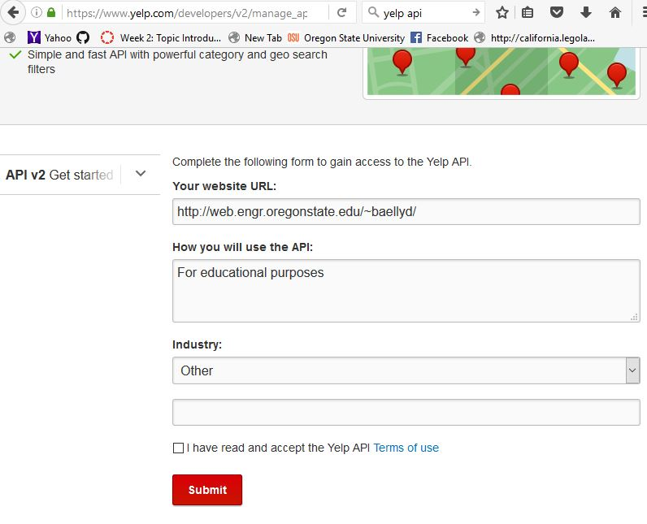
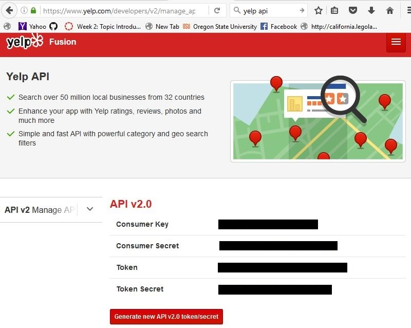

In order to use the API, you'll need some authentication credentials. You can get these by creating an "App" on Yelp, using the App Console here. Enter your website URL, description of how the API will be used, and Industry (ex: "Other", Education") in the fields.
Yelp returns to you the following information:
| What it's called | What it does |
|---|---|
| Consumer ID | User-specific ID (user name) which identifies you to Yelp |
| Consumer Secret | User-specific password; confirms you are who you say you are to Yelp. Used with the Token Secret to generate a hashed Signature for secure authentication. |
| Access Token ID | Value used during request authentication to gain access to the Yelp API endpoints. |
| Token Secret | Password associated with the Access Token; confirms the token is being used by the intended party. Used along with Consumer Secret by OAuth v1 to generate a hashed Signature for secure authentication (see the next page). |
This is how Yelp will identify you when you make a request.Do not give this information out! Since they should remain secret, the actual strings are blocked out in the image below.
